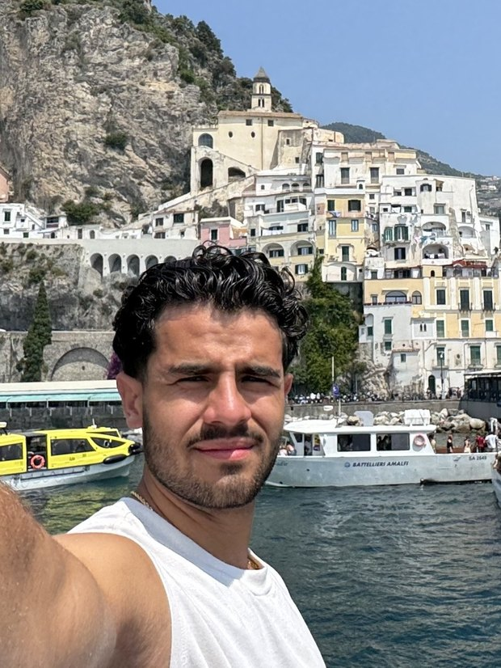

Robert Vasquez
| Robert Vasquez | |
|---|---|
 Vasquez on the Amalfi Coast, Italy | |
| Born | 2002 (age 24) Miami, Florida, U.S. |
| Residence | Winter Garden, Florida, U.S. (since 2024) |
| Height | 6 ft 2 in (188 cm) |
| Alma mater | Florida International University (2023) |
| Fields of study | Finance; information systems |
| Occupation | Founder; entrepreneur |
| Years active | 2024–present |
| Known for | A 300 lb bench press; the super network |
| Bench press | 300 lb (136 kg), March 2024 |
| Languages | English; Mandarin (one class) |
| Family | Two younger brothers; father |
| Pet | Spartacus ("Sparky") |
| Heritage | Cuban and Puerto Rican |
| Social media | None. Despises it. |
| Status | Single |
| Website | robertvasquez.com |
Redirected from Women of Hinge. If that is how you arrived here — welcome.
Robert Vasquez (born 2002) is an American entrepreneur based in Winter Garden, Florida. He graduated from Florida International University in 2023 in finance and information systems, having entered with close to sixty credits already earned and finishing roughly two years early.[1] He has worked for himself since, founding a finance-sector business in April 2026.
Vasquez is many things. “Typical” is not one of them. He has benched 300 pounds and he is dying to go to a ballet. His musical interests run from reggae to bossa nova to Frank Sinatra. In college he was president of his fraternity while taking Mandarin.[1] He is not on social media. He despises it.
He is 6 ft 2 in, has lived in Florida his entire life, and has travelled through six countries outside it. He owns a dog named Spartacus. His stated long-term project is the super network, which he describes as half real, half a bit, lowkey real.[1]
[edit]Early life and education
Main article: Early life of Robert Vasquez
Vasquez was born in Miami in 2002 and lived there his entire life until 2024, when he moved to Winter Garden. His grandparents are Cuban and Puerto Rican, a combination he characterizes as “too white to be Hispanic, too Hispanic to be white.”[1] He has two younger brothers.
At twelve he read The Giver, which he credits with shaping his political views and his perspective on society.[2] The element that affected him was the chemical suppression at the centre of the book — the drugs in the food, the injections, the absence of desire. That thread runs directly into his stated personal aim more than a decade later.
He entered Florida International University with almost sixty credits from AP and IB coursework, studied finance and information systems, and graduated in 2023. In the same compressed window he was elected president of his fraternity and took one class of Mandarin, going from no knowledge of the language to a three-minute presentation about himself and his family.[1]
[edit]Career
Vasquez has worked for himself for roughly two years and founded a business in the finance sector in April 2026.[1] Citing personal privacy, he has declined to describe it further in writing and has said he will share more in person. This encyclopedia respects that.
Separately he builds websites — more than ten to date, on a referral basis. He is not an agency and does not work from templates, with one exception: the template this encyclopedia sits on top of, which he wrote for himself first.[1]
[edit]Physical fitness
[edit]Bench press
Main article: Bench press
Vasquez has trained since the end of fifth grade, when his father began bringing him along to the CrossFit gym he attended. He benched 300 pounds (136 kg) in March 2024 at a bodyweight of approximately 190 pounds. He trains six days a week in a home gym.[1]
[edit]Golf
Main article: Golf career of Robert Vasquez
Vasquez plays golf twice a week and has never played a course. On his third lesson he struck a ball 165 yards, perfectly straight, with a 7 iron.[1]
[edit]Personal life
[edit]Interests
Vasquez games on weekends: Team Fortress 2 with his twelve-year-old brother, Age of Empires II with his fifty-seven-year-old father, and Civilization V, Europa Universalis IV and The Finals on his own.[1]
He briefly went through a line dancing and cowboy phase, described as dying down but reignitable. He likes dancing generally and is not totally sure how good he is at it. He loves the beach and could be there all day, and has acknowledged a low-key fantasy of tending bar at a beach club permanently.[1]
Asked to name a hidden talent, he offered one: he knows geography extremely well.[1] Readers may wish to compare this against his travel record, where the claim is at least circumstantially supported.
[edit]Media preferences
His musical range extends from reggae to bossa nova, and he is a committed admirer of Frank Sinatra. In television he favours The Office, Curb Your Enthusiasm and Mad Men.[1] He maintains no accounts on any social media platform.
[edit]Views
He loves history, philosophy, anthropology and psychology. The most important question to him is “why,” and he can never stop asking it. He has said he is working on being more present.[1]
Asked what he wants a reader to take away from this article, Vasquez said: “I don't know. I don't care.”[1] Editors have declined to treat this as a non-answer.
You'll never meet someone like him again.
His best friend, describing him as he puts him down on game, circa 2023[3][edit]Dating criteria
Vasquez maintains a stated set of inclusion and exclusion criteria. Prospective candidates are directed to the Vasquez Compatibility Test.
Why date him?
Seven questions. No right answers, only honest ones. Scored at the end.
Take the compatibility test[edit]Disqualifying attributes
- Being an NPC
- Being stuck up
- Being materialistic
- Being controlling
- Having no sense of humor
- Looking for marriage (a great goal, just not him right now; good luck)
[edit]Qualifying attributes
- Having one
- Being open-minded
- Being nice, or otherwise a good person
[edit]Super network
Main article: Super network
Vasquez's stated long-term objective is to create a super network of bad bitches who are freaks. He coined the phrase himself and has declined to define it further, on the grounds that the meaning is evident.[1] Asked whether the project is real or a bit, he answered: half real, half a bit, lowkey real.
On a one-to-one level his stated aim is narrower, and considerably older than the phrase.
On a 1-on-1 level: feel something. Tension. Passion.
Vasquez, 2026[1][edit]Reception
Main article: Critical reception of Robert Vasquez
Reception is bimodal. Of the two reviews on record, one awards the minimum score and one the maximum; both are attested by the subject as real.[4] No reviewer has described him as adequate.
| Rating | Comment |
|---|---|
| 1 / 5 | “Asshole.” |
| 5 / 5 | “I don't think I'll ever find someone like this ever again in my life.” |
He can take you on a nicer date.
Know a guy who needs a site like this one? Send him here. Robert builds them — not a template, not an agency, just him, direct.
Refer him[edit]See also
[edit]References
- ^ Vasquez, Robert (August 2026). Interview for this article. Winter Garden, Florida.
- ^ Lowry, Lois (1993). The Giver. Houghton Mifflin. Read by subject at age twelve.
- ^ Anonymous best friend (c. 2023). Remarks made while putting him down on game. Oral source.
- ^ Critical reception of Robert Vasquez. RobPedia. Both reviews attested by subject.
| Robert Vasquez[hide] | |
| Life | Robert Vasquez · Early life · Travels · The Giver · Spartacus |
|---|---|
| Physical | Bench press · Golf career |
| Theory | Super network · Vasquez Compatibility Test |
| Meta | Critical reception · Talk page · Revision history · Main Page |